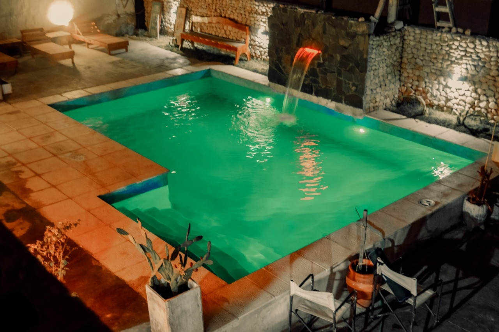
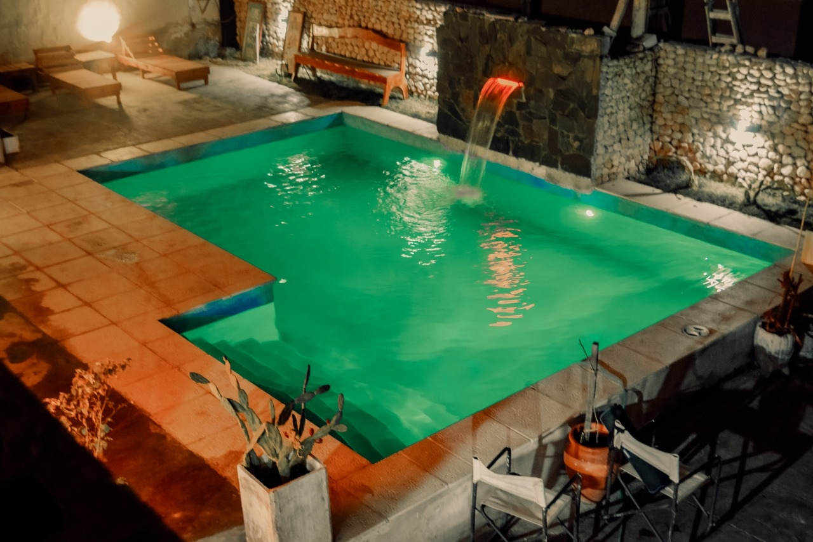

El hostal esta compuesto por 10 habitaciones de las cuales 7 se encuentran en la parte inferior y 3 en 1 piso acceso por escalera. todas las habitaciones cuentan con, baño privado, tv, wifi, aire acondicionado frio calor. heladera frigobar. Nuestros baños son amplios, y contamos con una habitacion adaptada para personas con discapacidad motris ( siempre consultar disponibilidad) los baños estan provistos de bidet, secador de pelo. en nuestras instalaciones contamos con wi-fi en todo el establecimiento. servicio de estacionamiento, patio, bar kincho con asadores y acceso a una cocina de uso comun
Ubicacion: 25 de mayo 53 SUR. a dos cuadras y media de la plaza principal
Datos de Contacto Whatsapp : +5493737471798
Mail : jaledcabur@hotmail.com.ar santehostal@live.com
 


Casagrande Hotel de Adobe, es un hotel boutique con Piscina, Jacuzzi, Restaurante y Winery. Ubicado a 200mts de la plaza principal, forman parte de La Ruta del Adobe con un casco historico del año 1890.
Pagina Web: https://www.casagrandetour.com
Ubicacion: Moreno 801
Datos de Contacto Whatsapp : +5493837438317
Mail : Info@casagrandetour.com
Telefono Fijo : 03837 421140
Mail : jaledcabur@hotmail.com.ar santehostal@live.com